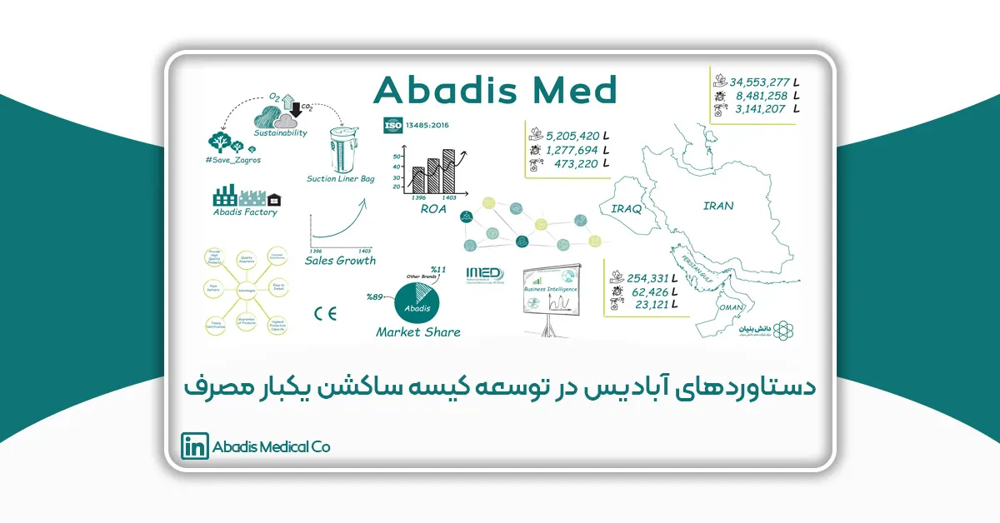

چکیده
کیسه ساکشن یکبار مصرف یکی از فناوریهای نوین در مدیریت مایعات عفونی بیمارستانی است که نقش مهمی در کنترل عفونت بیمارستانی، کاهش هزینههای عملیاتی و حفاظت از محیط زیست ایفا میکند؛ روشهای سنتی دفع مایعات عفونی، مانند استفاده از مخازن ساکشن دائمی، مشکلات متعددی از جمله مصرف بالای آب، نیاز به مواد ضدعفونیکننده، خطر انتقال آلودگی و هزینههای بالا را به همراه دارند؛ در این راستا، شرکت مخازن طبی آبادیس با تولید و توسعه کیسه ساکشن یکبار مصرف، تحولی اساسی در این حوزه ایجاد کرده است.
در این مقاله تأثیرات مثبت این فناوری را از جنبههای مختلف بررسی می نماییم، نتایج نشان میدهد که استفاده از کیسههای ساکشن یکبار مصرف توانسته است میزان مصرف آب بیمارستانی را بهطور چشمگیری کاهش دهد، از ورود پسابهای عفونی به محیط زیست جلوگیری کند و بهرهوری پرسنل درمانی را افزایش دهد. همچنین، این محصول با حذف نیاز به شستوشوی مخازن ساکشن آلوده، ایمنی کادر درمان را ارتقا داده و هزینههای مرتبط با مواد ضدعفونیکننده و نیروی انسانی را کاهش داده است.
بررسی دادههای آماری نشان میدهد که شرکت مخازن طبی آبادیس طی سالهای اخیر، با توسعه کیسههای ساکشن، موفق به صرفهجویی میلیونها لیتر آب در بیمارستانهای ایران، عراق و عمان شده است. این نوآوری نهتنها باعث بهبود فرآیندهای بیمارستانی شده، بلکه با جلوگیری از انتشار عوامل بیماریزا به محیط زیست، گامی مؤثر در جهت توسعه پایدار و بهداشت عمومی برداشته است.
با توجه به این دستاوردها، کیسه ساکشن یکبار مصرف بهعنوان یک راهکار مؤثر و استاندارد برای کنترل عفونت بیمارستانی و صرفهجویی در مصرف آب توصیه میشود. شرکت مخازن طبی آبادیس با تمرکز بر توسعه کیسه ساکشن و ارائه محصولات با کیفیت، توانسته است سهم قابلتوجهی از بازار را به خود اختصاص دهد و نقش کلیدی در بهینهسازی مدیریت ضایعات بیمارستانی ایفا کند.
مقدمه
بیمارستانها و مراکز درمانی روزانه حجم عظیمی از مایعات عفونی را تولید میکنند که مدیریت صحیح این ضایعات از جنبههای بهداشتی، اقتصادی و زیستمحیطی اهمیت ویژهای دارد. در گذشته، مایعات ساکشنشده در مخازن دائمی جمعآوری شده و پس از تخلیه، نیاز به شستوشو و ضدعفونی بود، که این فرآیند علاوه بر مصرف بالای آب و مواد ضدعفونیکننده، خطر انتقال عفونت به پرسنل و بیماران را افزایش میدهد.
با این حال، استفاده از کیسههای ساکشن یکبار مصرف بهعنوان یک فناوری نوآورانه، تحول بزرگی در مدیریت ضایعات بیمارستانی ایجاد کرده است. شرکت مخازن طبی آبادیس بهعنوان بزرگترین تولیدکننده این محصولات در ایران، توانسته است مزایای متعددی را در زمینه بهرهوری بیمارستانی، کنترل عفونت و حفاظت از محیط زیست ارائه دهد.
کاهش مصرف آب و جلوگیری از آلودگی زیستمحیطی
دستاوردهای آبادیس در کاهش مصرف آب
با جایگزینی کیسههای یکبار مصرف، دیگر نیازی به شستوشو و ضدعفونی مخازن نیست که این امر تأثیر مستقیمی بر صرفهجویی در مصرف آب دارد. بر اساس دادههای ثبتشده تا ۳۰ آذر ۱۴۰۳، شرکت آبادیس موفق شده است:
در ایران 🇮🇷:
- ۳۴,۵۵۳,۲۷۷ میلیون لیتر در مصرف آب کاهش دهد
- ۸,۴۸۱,۲۵۸ میلیون لیتر جلوگیری از ورود پسابهای عفونی بیمارستانی به محیط زیست
در عراق 🇮🇶:
- ۵,۲۰۵,۴۲۰ میلیون لیتر در مصرف آب کاهش دهد
- ۱,۲۷۷,۶۹۴ میلیون لیتر جلوگیری از ورود پسابهای عفونی بیمارستانی به محیط زیست
در عمان 🇴🇲:
- ۲۵۴,۳۳۱ میلیون لیتر در مصرف آب کاهش دهد
- ۶۲,۴۲۶ میلیون لیتر جلوگیری از ورود پسابهای عفونی بیمارستانی به محیط زیست
کاهش آلودگی زیستمحیطی
مایعات عفونی بیمارستانی حاوی باکتریها، ویروسها و سایر عوامل بیماریزا هستند که ورود آنها به آبهای سطحی و زیرزمینی میتواند باعث شیوع بیماریهای عفونی شود. با استفاده از کیسههای ساکشن آبادیس، این مایعات بدون تماس با محیط، ایمن دفع شده و از آلودگی آبهای شهری جلوگیری میشود.
کاهش مصرف مواد ضدعفونیکننده و هزینههای مرتبط
هزینههای بالای ضدعفونی در روشهای قدیمی
مواد ضدعفونیکنندهای مانند هیپوکلریت سدیم و گلوتارآلدئید بهطور گسترده برای شستوشوی مخازن استفاده میشوند که علاوه بر هزینههای سنگین، دارای اثرات زیستمحیطی و خطرات شغلی برای پرسنل بیمارستانی هستند.
کاهش مصرف مواد ضدعفونیکننده با استفاده از کیسههای ساکشن آبادیس
۳,۱۴۱,۲۰۷ میلیون لیتر کاهش مصرف مواد ضدعفونیکننده در ایران
۴۷۳,۲۲۰ میلیون لیتر کاهش مصرف مواد ضدعفونیکننده در عراق
۲۳,۱۲۱ میلیون لیتر کاهش مصرف مواد ضدعفونیکننده در عمان
کاهش مصرف این مواد هزینههای بیمارستانی را کاهش داده و تأثیرات منفی بر محیط زیست را کمتر میکند.
کاهش خطر عفونتهای بیمارستانی و افزایش ایمنی پرسنل
- کاهش تماس مستقیم پرسنل با مایعات آلوده
- بستهبندی ایمن مایعات و دفع بدون نشت
- کاهش انتقال عفونتهای بیمارستانی
- این ویژگیها نهتنها سلامت پرسنل و بیماران را تضمین میکند، بلکه منجر به کاهش هزینههای درمان عفونتهای بیمارستانی نیز میشود.
افزایش بهرهوری بیمارستانی و بهینهسازی فرآیندهای درمانی
چالشهای عملیاتی روشهای سنتی
- زمانبر بودن فرآیند شستوشوی مخازن
- کاهش کارایی نیروی انسانی
- افزایش هزینههای عملیاتی
مزایای کیسههای ساکشن آبادیس در بهینهسازی بیمارستانی
- افزایش ۳۰٪ بهرهوری پرسنل بیمارستانی
- کاهش هزینههای نیروی انسانی
- تمرکز بیشتر بر ارائه خدمات درمانی
مسئولیت اجتماعی و حفاظت از محیط زیست: پروژه نجات زاگرس
شرکت مخازن طبی آبادیس نه تنها در زمینه تولید محصولات نوآورانه در حوزه پزشکی و بیمارستانی پیشرو است، بلکه همواره در تلاش بوده است تا مسئولیت اجتماعی خود را در راستای حفاظت از محیط زیست بهطور مؤثر ایفا کند. در این راستا، یکی از مهمترین پروژههای این شرکت، پروژه نجات زاگرس است که با هدف حفاظت از منابع طبیعی و مقابله با مشکلات زیستمحیطی در مناطق زاگرس اجرا شده است.
اهداف پروژه نجات زاگرس
منطقه زاگرس که بهعنوان یکی از مهمترین اکوسیستمهای طبیعی ایران شناخته میشود، در سالهای اخیر با مشکلاتی چون جنگلزدایی، تغییرات اقلیمی، خشکسالی و آتشسوزیهای گسترده روبهرو بوده است. این مشکلات تهدیدی جدی برای حیاتوحش، تنوع زیستی و سلامت این منطقه محسوب میشوند. بنابراین، پروژه نجات زاگرس با هدف حفاظت از منابع طبیعی، تقویت پوشش گیاهی و مقابله با تغییرات اقلیمی بهویژه در مناطق کوهستانی زاگرس طراحی شده است.
کاشت نهال بلوط و اهمیت آن
در فاز اول این پروژه، شرکت مخازن طبی آبادیس تصمیم گرفت که 400 اصله نهال بلوط را در مناطق مختلف زاگرس بکاراند. بلوطها یکی از گونههای مقاوم و دیرپای درختان جنگلی هستند که توانایی زیادی در مقابله با خشکی و تغییرات اقلیمی دارند. همچنین، این درختان بهعنوان یک بخش حیاتی از اکوسیستم جنگلی، نقش مهمی در تثبیت خاک، حفظ منابع آب زیرزمینی و تولید اکسیژن ایفا میکنند.
کاشت بلوط در این مناطق، علاوه بر ایجاد یک پوشش گیاهی جدید و تقویت جنگلها، باعث بهبود کیفیت خاک و جلوگیری از فرسایش آن میشود. این اقدام نه تنها به تثبیت محیطزیست کمک میکند، بلکه منبعی پایدار برای تأمین اکوسیستم حیوانی و گیاهی منطقه فراهم میآورد.
برنامههای آینده پروژه نجات زاگرس
شرکت مخازن طبی آبادیس با توجه به دستاوردهای مثبت فاز اول پروژه، برنامهریزی کرده است که در سالهای آینده تعداد نهالهای کاشتهشده را به 4,000 اصله نهال بلوط افزایش دهد. این طرح بلندمدت، با هدف گسترش فضای سبز و ارتقاء کیفیت محیط زیست در منطقه زاگرس، بخشی از تلاشهای گستردهتر این شرکت برای حفظ محیطزیست و مبارزه با تغییرات اقلیمی است.
پروژه نجات زاگرس بهعنوان یک پروژه پایدار و بلندمدت، در نظر دارد در همکاری با سازمانهای دولتی، غیر دولتی و جوامع محلی به حفاظت از منابع طبیعی و رشد پوشش گیاهی در این منطقه ادامه دهد. همچنین، شرکت آبادیس در نظر دارد با حمایت از پروژههای مشابه در سایر مناطق ایران، نقش خود را در حفظ طبیعت و مبارزه با بحرانهای زیستمحیطی گسترش دهد.
ترویج فرهنگ محیطزیستی در مراکز درمانی و بیمارستانها
پروژه نجات زاگرس تنها محدود به حفاظت از محیط زیست در سطح محلی نیست، بلکه هدف آن ترویج فرهنگ محیطزیستی در سطح ملی و بینالمللی است. شرکت مخازن طبی آبادیس با اجرای این پروژه، بهطور مستقیم و غیرمستقیم فرهنگ حفاظت از منابع طبیعی و اهمیت محیطزیست را در بین مراکز درمانی و بیمارستانها گسترش میدهد.
این پروژهها با ایجاد آگاهی در میان کادر درمانی و مدیریت بیمارستانها، آنها را به استفاده از محصولات و فناوریهای سبز و پایدار ترغیب میکند. این امر باعث میشود که بیمارستانها و مراکز درمانی بهعنوان نهادهایی که تأثیر زیادی بر جامعه دارند، مسئولیتپذیری بیشتری در قبال حفاظت از محیطزیست و منابع طبیعی داشته باشند.
مشارکت در بهبود کیفیت زندگی جامعه
شرکت مخازن طبی آبادیس با اجرای پروژههای محیطزیستی مانند نجات زاگرس، تأثیرات مثبتی بر کیفیت زندگی جامعه میگذارد. این پروژهها با تقویت جنگلها و تنوع زیستی، میتوانند به کاهش مشکلات زیستمحیطی نظیر آلودگی هوا و گرمایش جهانی کمک کنند. علاوه بر این، وجود پوشش گیاهی مناسب باعث افزایش کیفیت آبهای زیرزمینی، بهبود سلامت خاک و پایداری منابع طبیعی میشود.
در کنار اینها، پروژه نجات زاگرس با اشتغالزایی برای جوامع محلی در حوزههای کشاورزی و محیطزیست، موجب بهبود وضعیت اقتصادی منطقه میشود و با ایجاد فضاهای سبز و سالمتر، زندگی مردم را نیز بهبود میبخشد.
پروژه نجات زاگرس، یکی از اقدامات برجسته شرکت مخازن طبی آبادیس در راستای مسئولیت اجتماعی و حفاظت از محیط زیست است که با هدف کاهش آثار منفی تغییرات اقلیمی و حفظ منابع طبیعی در یکی از مهمترین اکوسیستمهای ایران انجام شده است. این پروژه با کاشت نهال بلوط و گسترش این اقدامات در سالهای آینده، نقش مهمی در حفظ تعادل زیستمحیطی و توسعه پایدار ایفا میکند.
شرکت مخازن طبی آبادیس با این پروژهها نه تنها به مسئولیتهای زیستمحیطی خود عمل کرده است، بلکه توانسته است فرهنگ محیطزیستی را در جامعه بهویژه در میان مراکز درمانی و بیمارستانها ترویج دهد و الگویی موفق در راستای حفظ طبیعت و مقابله با بحرانهای زیستمحیطی ارائه دهد. این گونه اقدامات مسئولیتپذیرانه، گامی مؤثر در جهت پایداری زیستمحیطی و توسعه پایدار محسوب میشود.
نتیجهگیری
شرکت مخازن طبی آبادیس با توسعه کیسههای ساکشن یکبار مصرف توانسته است:
- مصرف آب را در مراکز درمانی کاهش دهد.
- از ورود پسابهای عفونی به محیط زیست جلوگیری کند.
- هزینههای بیمارستانی را کاهش دهد.
- بهرهوری پرسنل درمانی را افزایش دهد.
- ایمنی بیمارستانها را ارتقا دهد.
- این فناوری نوآورانه، گامی بزرگ در راستای توسعه پایدار، کنترل عفونت و کاهش هزینههای درمانی است.
منابع
1. سازمان جهانی بهداشت (WHO):
• World Health Organization. (2017). Safe management of wastes from health-care activities (2nd ed.). Geneva: WHO Press.
2. مرکز کنترل و پیشگیری از بیماریها (CDC):
• Centers for Disease Control and Prevention (CDC). (2021). Guidelines for Environmental Infection Control in Health-Care Facilities. Atlanta, GA.
3. آژانس حفاظت از محیطزیست ایالات متحده (EPA):
• Environmental Protection Agency (EPA). (2020). Medical Waste Management and Environmental Impacts. Washington, DC.
4. مقالات علمی و راهنماهای تخصصی:
• Chartier, Y., Emmanuel, J., Pieper, U., Prüss, A., Rushbrook, P., Stringer, R., & Townend, W. (2014). Health-care waste management. WHO.
• Rutala, W. A., Weber, D. J., & the Healthcare Infection Control Practices Advisory Committee (HICPAC). (2019). Guideline for Disinfection and Sterilization in Healthcare Facilities, 2019. CDC.
• Diaz, L. F., Savage, G. M., & Eggerth, L. L. (2005). Alternatives for the treatment and disposal of healthcare wastes in developing countries. Waste Management, 25(6), 626-637.
5. گزارشهای زیستمحیطی بینالمللی:
• United Nations Environment Programme (UNEP). (2019). Environmental Impact of Medical Waste Disposal on Ecosystems. Nairobi, Kenya.
• European Environment Agency (EEA). (2022). Hospital Wastewater Management and Its Impact on Urban Water Systems.
6. گزارشهای ملی:
• وزارت بهداشت، درمان و آموزش پزشکی ایران. (1402). گزارش وضعیت مدیریت پسماند بیمارستانی در ایران.
• سازمان محیطزیست ایران. (1401). تأثیر پسابهای بیمارستانی بر کیفیت آبهای زیرزمینی.